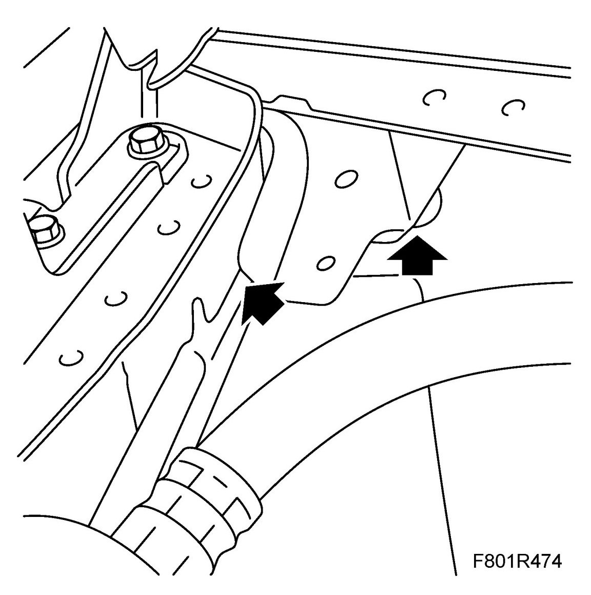
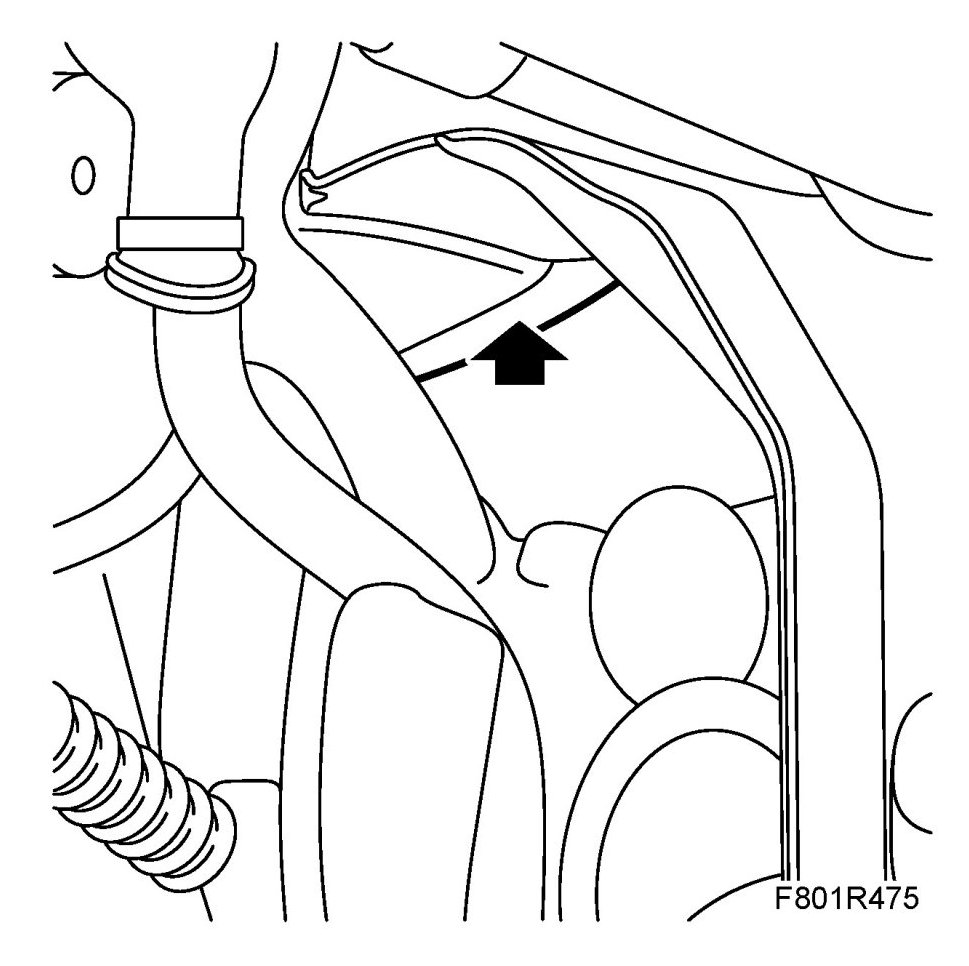

Carpet: Testing and Inspection
Wet Carpets On Right-hand Side Of Car
Fault symptoms
Wet carpets on right-hand side of car
Background: The body seal is inadequate where the A-pillar and front wing meet. Water can then enter through the right-hand A-pillar and continue down to the floor under the carpet and insulation. Both front and rear carpets may be wet despite the leak coming from the A-pillar as the rear floor has a lower position than the front floor.
Cars affected:
All Saab 9-3 (9440)
Procedure
1. Check the seals in the engine bay as illustrated.

2. Check the seals behind the glove compartment (LHD) or behind the fuse box (RHD).

3. If the seals are incomplete, proceed as follows:
- Remove the old seal.
- Clean the surface.
- Fit a new seal